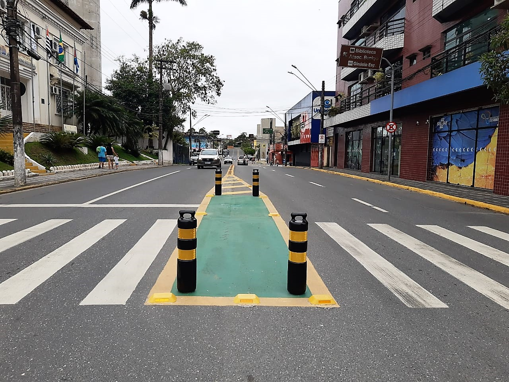

Artigo em Destaque
Trânsito de Registro-SP pretende evoluir com semáforos inteligentes

Em 2026, Registro visa investimentos em modernização, infraestrutura urbana e ações educativas para melhorar a mobilidade e a segurança da população.
Com um sistema de mobilidade urbana moderno, com canaletas, vias lentas e vias rápidas, além de hoje que Registro-SP é visado por ser bastante movimentado, sendo conhecida como a “Capital do Vale do Ribeira” e um importante polo comercial e de serviços da região. Em 2026, a cidade se manteve na vanguarda, com investimentos em modernização, infraestrutura urbana e ações educativas para melhorar a mobilidade e a segurança da população nas ruas.
“Temos buscado inovar com novas tecnologias e aprimoramento técnico. Nossas ações refletem o compromisso da cidade em tornar o trânsito mais seguro e eficiente.”
— Péricles de Matos, Secretário de Defesa Social e Trânsito
Registro-SP planeja implementar semáforos inteligentes, novos binários, modernização dos processos e incentivo à conscientização do trânsito para reduzir acidentes e dar autonomia a pedestres e condutores.
Comentários 0
A carregar comentários...